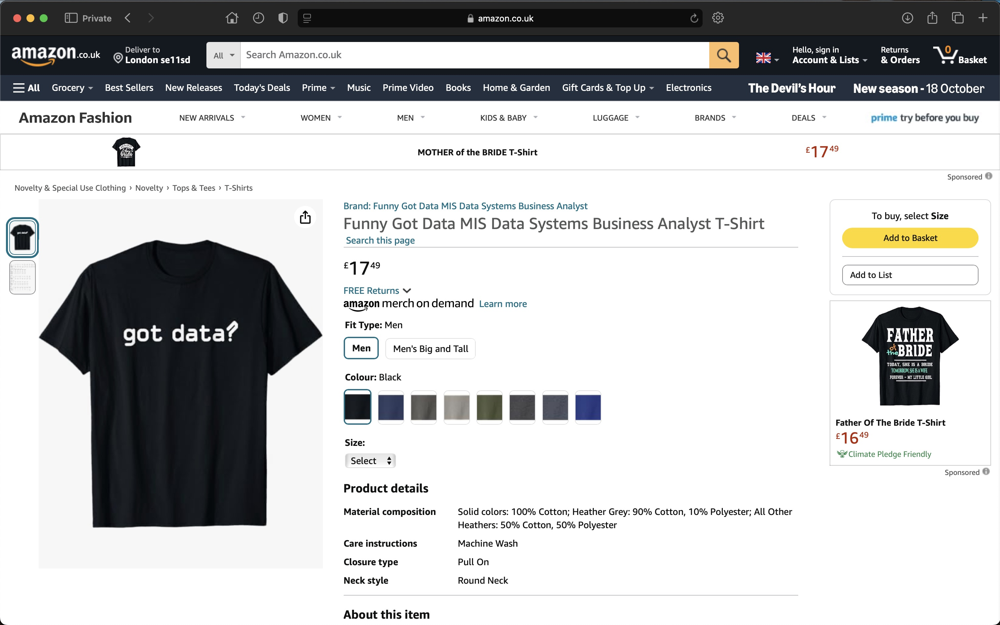
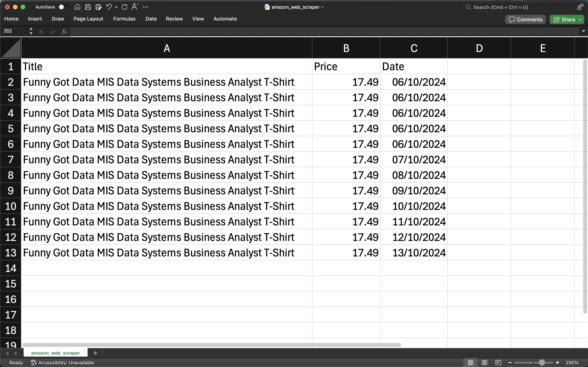

Data Scraping -
Amazon Page
Amazon Page: Press Here
GitHub File: Press Here
Overview:
This project demonstrates a dynamic Amazon product price tracker built with Python. The web scraper connects to a specific product page, extracts the title and price, and automatically updates the data in a CSV file on a daily basis. The automation process highlights skills in web scraping, data cleaning, and process automation using Python.
Key Skills Used:
• Web Scraping: Extracting data from websites using Python’s BeautifulSoup and requests libraries
• Data Cleaning: Cleaning and formatting product titles and prices for consistency
• Automation: Running price checks daily using a while loop and time.sleep for process automation
• CSV File Handling: Writing and appending data to CSV files using Python’s csv library
Code Description:
The code extracts product titles and prices from an Amazon product page and automates the process of tracking these prices over time. It saves the data to a CSV file, making it ideal for price analysis, trend monitoring, and building future dashboards. This project automates the entire scraping and tracking process to run once every 24 hours.
Why This Project is Worth Doing:
• Web scraping is a key skill for data analysts to gather valuable data from the web
• The project demonstrates the practical application of Python for real-time data extraction and monitoring
• Automating tasks like price tracking is useful for businesses and data analysts to monitor pricing trends
Step-by-Step Guide for Web Scraping:
- Connect to Amazon: Use requests to pull HTML content from the Amazon product page
- Extract Product Title & Price: Use BeautifulSoup to find and clean the product title and price
- Automate Daily Price Check: Automate the script to run once every 24 hours and store updated price data
- Store Data: Write and append the data to a CSV file for future analysis
Initial Webpage:

Extracted Data (ongoing):

CONCLUDING REMARKS
This project significantly enhanced my ability to apply web scraping techniques in Python using BeautifulSoup and requests. It demonstrated how to automate data extraction processes and ensure that the extracted data can be stored and analysed in real-time. Building the Amazon price tracker deepened my understanding of handling dynamic web data, automating repetitive tasks, and ensuring data consistency. The experience gained from this project is valuable for developing efficient methods of collecting data from online sources, which is an essential skill for any data analyst or business seeking to leverage real-time data for informed decision-making.